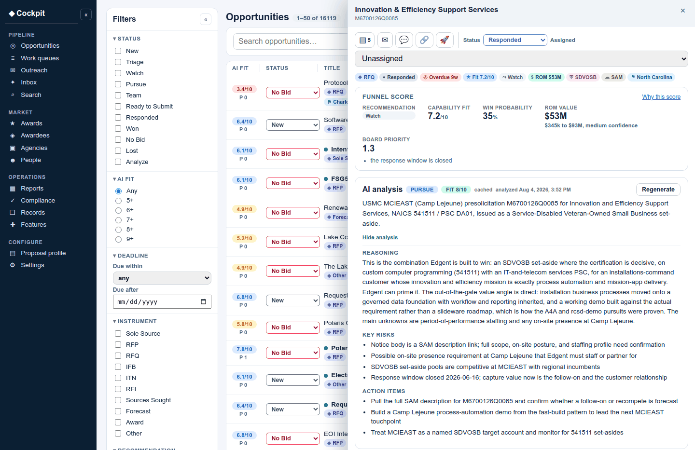
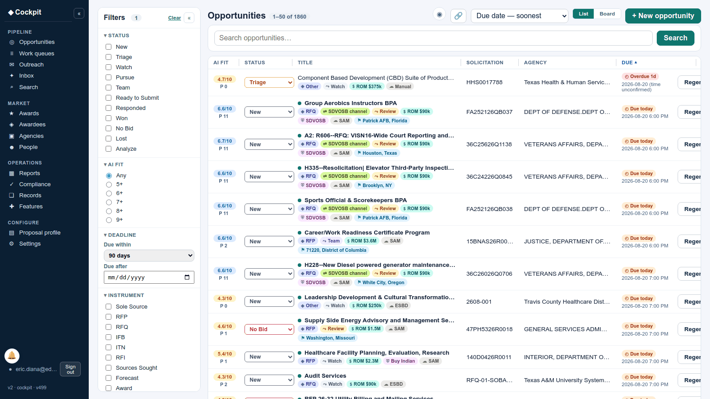

Claude in production at Edgent: three products
Edgent LLC is a service-disabled veteran-owned small business in Bastrop, Texas, serving federal, state, and K-12 buyers. Claude is the model inside three products Edgent builds and operates: Askura, a conversational survey platform; VForce360, a governed data lakehouse with a natural-language analyst; and Edgent Cockpit, a business development platform. This page describes what Claude does in each, how every Claude call is governed, and where each product can be tried.
Askura: surveys that talk back
Askura is an AI-native survey platform, an alternative to Qualtrics, SurveyMonkey, and Typeform. Instead of a form, every survey runs as an adaptive conversation over web chat or SMS. Claude is in the product at three points.
What Claude does
- Authoring. A researcher describes what they want to learn. Claude drafts the questions, the branching logic, and the translations; the researcher refines and publishes. Authoring a survey takes seconds instead of an afternoon.
- The conversation. Each respondent talks to a Claude-driven interviewer that asks the authored questions, follows up on vague or incomplete answers, and keeps the exchange going until it has what the question needs. The output is structured data, not transcripts: every answer maps back to the instrument so the results are analyzable.
- Analysis. As replies land, Claude summarizes themes and sentiment and supports follow-the-thread exploration across responses, so findings are available the moment fielding closes rather than after a coding pass.
Why it matters to a buyer
Response quality rises when people talk instead of tick boxes, and reach widens when the survey meets them on SMS with no app and no login (HELP and STOP handled out of the box). Delivery is white-labeled per tenant down to the respondent's screen, and cohorts can be targeted by segment and risk band. A live public deployment collects school-climate survey responses for a district transparency program, with the results landing in VForce360 and publishing to a public dashboard with small-population suppression applied in the pipeline.
Try it: askura.ai. Downstream results, live on synthetic data: rcsd-demo.vforce360.ai/dashboard.
VForce360: a governed lakehouse with a natural-language analyst
VForce360 is a governed data lakehouse that turns documents, including scanned paper, into queryable tables, with a catalog, lineage, data quality, relationship-based access control, and governed SQL over JDBC and ODBC. The open demo tenant serves a real scanned legal filing and runs live queries on page load. Claude is the analyst on top of that platform.
What Claude does
- Questions to governed SQL. A user asks a data product a question in plain English. Claude generates SQL that the platform executes under the user's own permissions. The query is shown, editable, and re-runnable inside the conversation, and an edited query goes back to Claude for further analysis with the change shown as a diff.
- Semantic grounding. Every column carries a semantic contract (role such as count, money, share, or date; grain; keys; derivation; caveats) that Claude binds against, so a dollar threshold cannot land on a count column. Column descriptions authored in the catalog feed the same grounding.
- Self-check and multi-round. An implausible result trips a correction round with a diagnosis written for the model before the user sees it; an empty result is probed rather than explained away. Follow-up questions inherit the prior round's tables and intent, so "what about the top 100" changes a limit, not the dataset.
- Document intelligence. Scanned and uploaded documents are classified and extracted with vision-language models behind a human review gate; reviewed records land as tables the analyst can query.
- Charts and dashboards. Results render as tables and charts; charts can be promoted into the BI layer, and a conversation can be turned into a dashboard.
Why it matters to a buyer
Authorization is enforced by the platform, never by the model: the SQL gate resolves every table a statement reads and checks it against the requesting user's grants before anything executes, and a statement it cannot resolve is refused, not run. That is what makes natural-language access safe over FERPA, HIPAA, and CJIS-class data. The same platform hosts the district transparency dashboard linked above, with its audit chain's verification shown in the interface.
Try it: vforce360.ai (open demo, no sign-in). Public analyst view on synthetic district data: rcsd-demo.vforce360.ai/analytics/rcsd-v2.
Edgent Cockpit: business development run on Claude
Cockpit is Edgent's operating platform for public-sector business development, used every working day by the firm's own team. It ingests opportunities from federal and state procurement sources into a corpus of more than 16,000 records and carries them through analysis, pursuit, proposal, and CRM.
What Claude does
- Opportunity analysis. Claude reads each opportunity against the firm's capability profile and produces a structured fit analysis; a deterministic funnel scores it, and the two are regenerated together so a recommendation never sits over a stale score.
- Proposal generation. For a pursuit, Claude derives the document structure from the buyer's own response form and drafts each section, then produces an honest checklist of what is complete and what still needs the owner: references, signatures, registrations, pricing. The PDF bundle renders in the buyer's form order on the firm's letterhead.
- Research to CRM. Research documents are read into people and office records with provenance and a confidence ladder, so relationship work starts from what is already known.
- Inbox triage and drafting. An hourly job reads the business mailbox, classifies solicitation notices and amendments, resolves amendments to their existing opportunities (never duplicating), judges fit, and drafts a digest. Outreach email is drafted into the owner's mailbox with the right signature in plain, human form.
- Work queues. Rules over the corpus (for example, set-aside opportunities under a value threshold closing soon with no relationship touch) materialize into durable work queues with claims, leases, and an event trail.
Why it matters to a buyer
Cockpit is the product Edgent trusts its own revenue to, which is the strongest test a platform passes. Its draft-only rule is structural: the mail adapter has no send capability, and a guard test fails the build if one ever appears. Every AI-assisted action is recorded with the acting identity, and where an agent acts for a person, both identities.
What it looks like
Three screens from the running system, captured on live data. Click any image for the full-size version.



Access: cockpit.edgentllc.com (SSO; walkthrough on request).
How every Claude call is governed
- Human in the loop, enforced by the system. Claude drafts, extracts, or proposes; a person reviews and decides. Where the review gate matters (document extraction, outbound mail, proposal submission) it is code the product cannot bypass, not a policy memo.
- The model never holds more access than the user. Data reads triggered by Claude are authorized against the requesting user's relationship-based grants, and unresolvable requests are refused.
- Tenant isolation. Each customer tenant runs on its own dedicated host with its own identity realm and data boundary; white-label delivery is per tenant.
- Audit. AI-assisted actions land in a hash-chained audit trail; the public dashboard shows the chain's verification in its interface.
- Privacy by construction. Small-population suppression in the pipeline, field-level and event-payload encryption for sensitive data, no customer data used for training.
- Deployable inside the customer's boundary. Kubernetes on government or commercial cloud, or the customer's own accredited environment.
Built with Claude Code
All three products are engineered with Claude Code. Work runs as issue-first, plan-first lanes: a tracked issue exists before any agent is dispatched, acceptance criteria are written as Gherkin scenarios, pull requests merge only on a fully green run of the complete check set, and deployment rides continuous integration. A post-release verification job exercises every canonical product surface after each deploy and pages the team on any failure. Multiple Claude Code agents work in parallel across repositories, coordinated through issues and isolated worktrees, and lessons learned are recorded to a shared engineering memory every agent recalls before non-trivial work. The same discipline applies to content: courses, proposals, and outreach drafts are versioned, linted, and reviewed like code.
Delivery method: edgentllc.com/process. Public code examples: github.com/edgentx/code-examples.
What this page is and is not
- All three products are Edgent-built and Edgent-operated and in production: Askura and VForce360 as public products with open demos, Cockpit as the platform Edgent runs its own business on. The public demonstrations serve disclaimed synthetic data at realistic scale.
- Edgent was formed in 2026. These are not deliveries under contract to an external client, and this page does not present them as such. Individual team experience at prior employers attaches to named individuals, not to the company.
Contact
Eric G. Diana, Managing Member and Principal Architect. eric.diana@edgentllc.com, 480-414-5556. Capability statement: edgentllc.com/capability-statement.pdf. SBA certification profile: UEI UZFLEDGS3PC5, CAGE 1ZSR0.